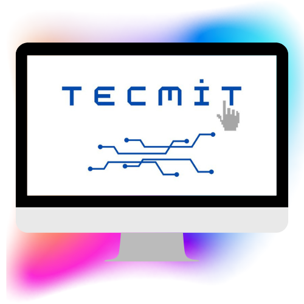

Explorando o Futuro: Soluções Inovadoras para um Mundo em Evolução.

Sobre a TecMit
Objetivos
Desenvolver soluções tecnológicas inovadoras para otimizar processos empresariais e sociais.
Promover a digitalização sustentável, garantindo que a tecnologia seja acessível e ambientalmente responsável.
Investir em pesquisa e desenvolvimento, mantendo-se na vanguarda das tendências tecnológicas.
Garantir segurança e eficiência digital, proporcionando ferramentas confiáveis para usuários e empresas.
Fomentar a inclusão digital, criando soluções que beneficiem diversos públicos e reduzam desigualdades tecnológicas.
Segurança Digital
Acessibilidade à Tecnologia
Reduzir Impactos Ambientais
Desenvolvimento Tecnológico
Redução das Desigualdades Tecnológicas
Projetos
"Ambição e conquista sem contribuição não tem significado. E qual é a sua contribuição?"
(O clube do imperador)